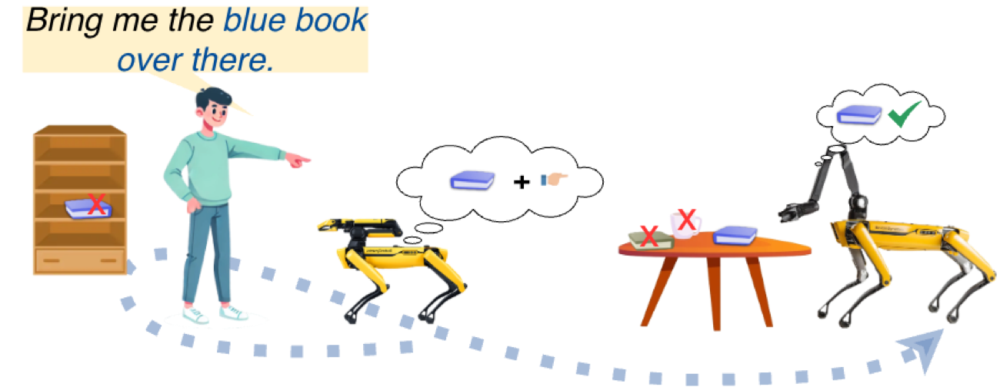
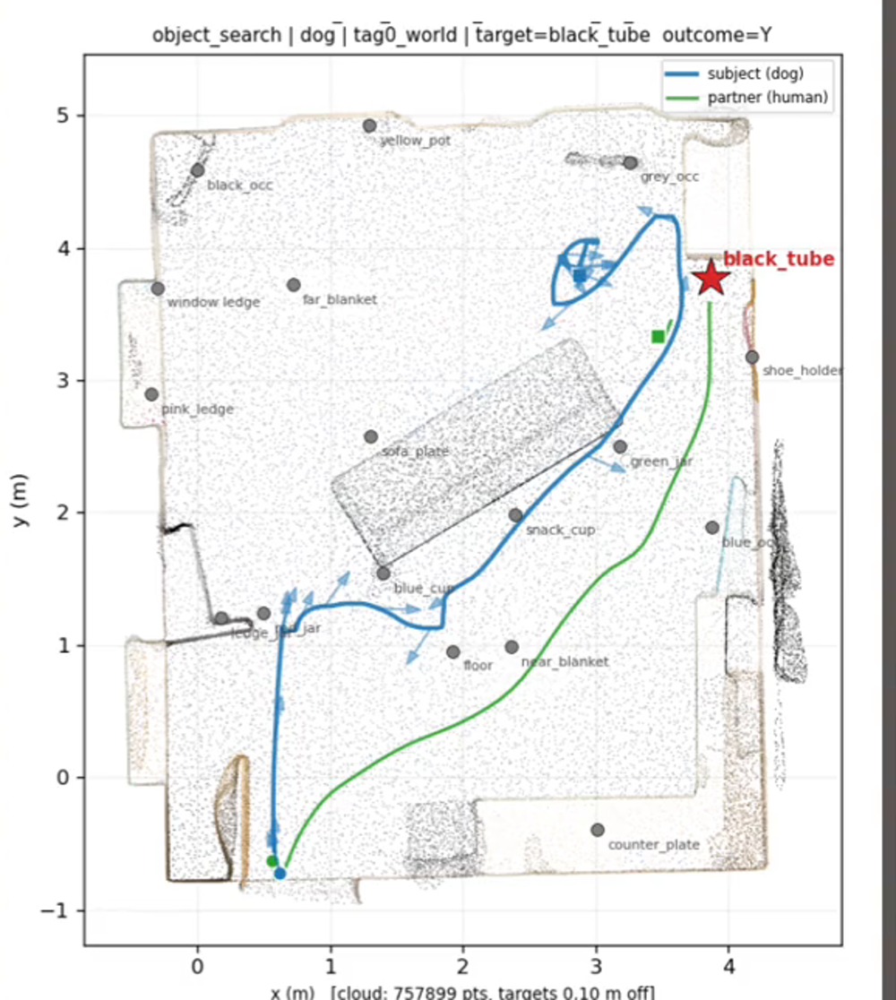
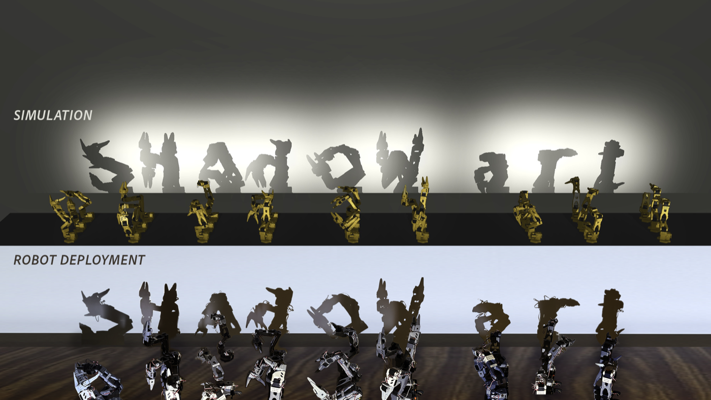
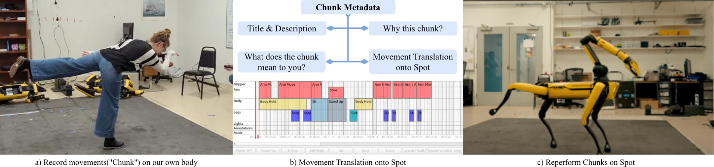
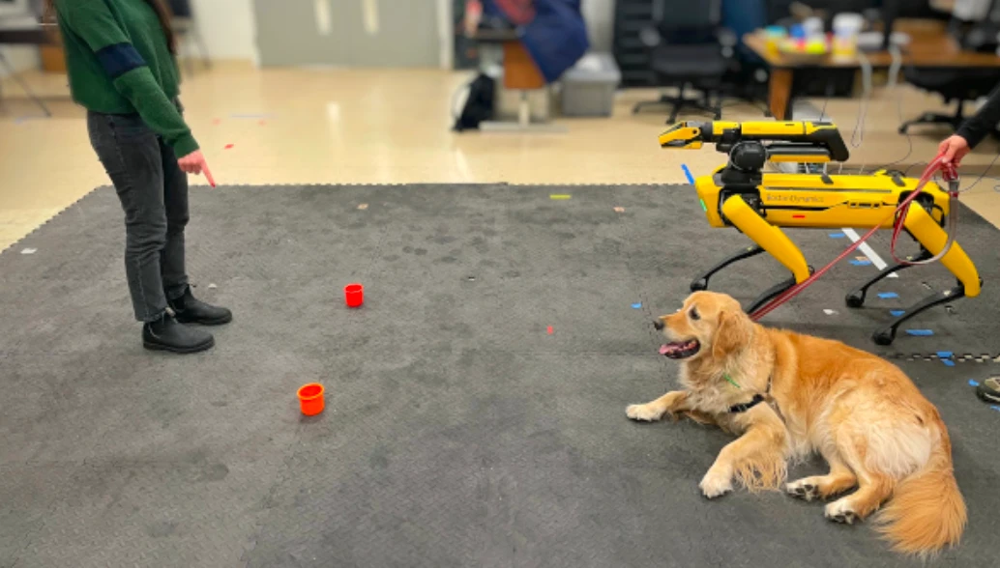
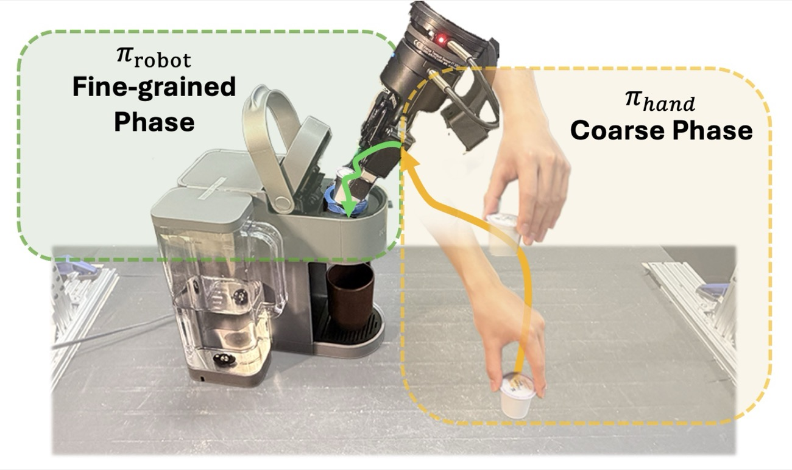
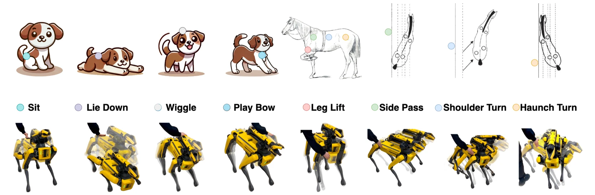
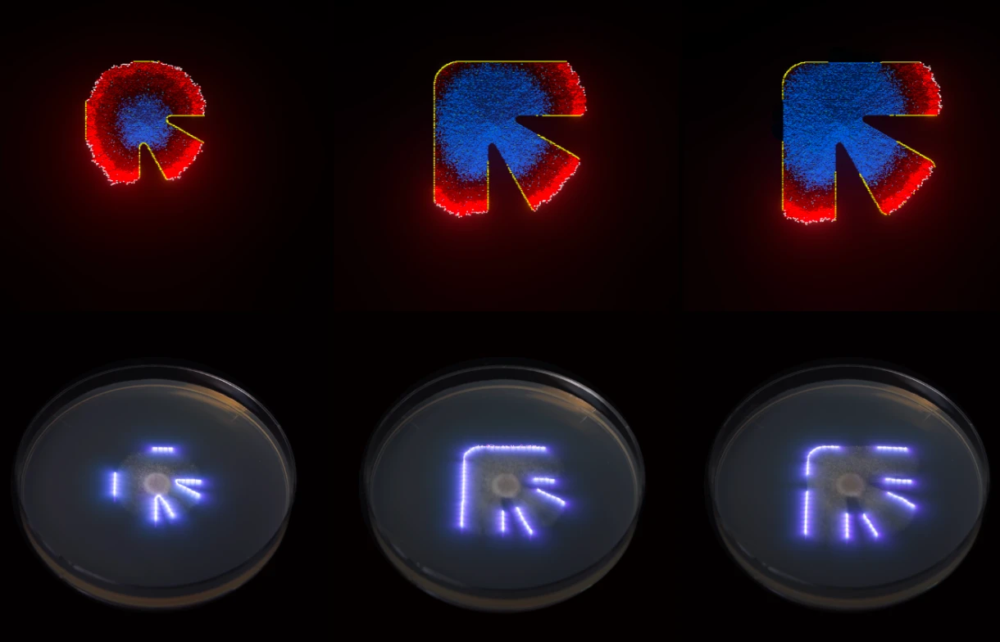

Robotics researcher, engineer & dancer
Providence, Rhode Island
xiao_he [at] brown.edu
I am a fourth-year Ph.D. candidate in the Humans to Robots Lab at Brown University, advised by Prof. Stefanie Tellex. Previously I completed a B.S. in Mechanical Engineering with an additional major in Robotics at Carnegie Mellon University, where I was systems integration and creative lead on the Iris Lunar Rover.
My research asks how agents with different bodies come to understand each other: what the minimum shared information for communication is, and which representations carry meaning across embodiments. My past work spans multimodal instruction grounding, social attention and gaze, social navigation, and expressive robot behaviour — often bridging robotics, cognitive science and art.
Human–robot interaction · Multimodal grounding · Embodied AI · Decision-making under uncertainty · Social attention · Robotic art

Multimodal grounding Point and say “the blue book over there” — the robot searches where you actually meant. LEGS-POMDPHRI 2026 Project ↗Paper ↗Code ↗
Social attention Replaying real human–dog searches in simulation to learn where a robot should look. FetchHoundICRA 2026 WS Project ↗
Robotic art A fleet of ordinary robot arms poses so that the union of their shadows becomes one picture. UMBRAICRA 2027 Project ↗
Movement and computing Dancers record movement on their own bodies, then translate it onto Spot to find out what the robot can say. Choreographic InterrogationMOCO 2026 Paper ↗
Gesture understanding When someone points, which vector do they actually mean? Five candidates, tested against real dogs. Find It Like a DogCogSci 2024 Paper ↗
Cross-embodiment learning Human video teaches the robot how to move; a little robot data teaches it where precision matters. DUO Policy2026 Project ↗Paper ↗
Tactile sensing Feeling where it was touched, anywhere on its body, with no tactile sensors at all. UniTacCVPR 2026 WS Paper ↗
Computational art Simulating how fungi grow, and steering living cultures with light. Fungal MorphologySIGGRAPH Asia 2024 Paper ↗Multi-robot shadow art as projection-space whole-body control. A staged CMA-ES solver assigns image-space regions to each arm and warm-starts from a library of past solutions, beating monolithic search with 3.8× fewer renders. On UMBRA-Bench (562 silhouettes, mean IoU 0.771) and three physical SO-101 arms, viewers in a 34-person study identified 85.8% of simulated and 68.8% of physically cast shadows, against 20% chance.
Expressive embodiment · Multi-robot whole-body control · Robotic art
Supported by the National Endowment for the Arts
A POMDP that fuses 3D gesture cones, language prompts and visual grounding into a single observation model. Gesture and language together reach 89% success, more than 18 points above either modality on its own.
Multimodal instruction grounding · Decision-making under uncertainty
Also at ICRA 2025 Late Breaking Results
Social attention in collaborative search, framed as a learning problem: when, where and what to look at using the partner’s attention, where standard active perception only maximises information gain. 3D gaze is reconstructed from multi-camera human–canine search video — per-session camera poses, a head-direction cone and a measured object catalogue — and compared against human-coded fixations and pretrained gaze-following. What survives is statistical rather than scripted: dogs cycle between objects and floor, look to their partner after an off-target glance, and look at a distant object shortly before walking to it. Those distributions, not a fixed sequence of looks, are what the quadruped policy is being trained to reproduce. A matched evaluation on Spot is next.
Embodied AI · Social attention · Learning from demonstration
Cross-embodiment learning lets human video stand in for expensive robot data, but the embodiment gap confines the resulting policies to coarse behaviour. DUO Policy splits the work: a hand policy pretrained on human video handles global, free-space motion, a robot policy trained on sparse in-hand data makes local, precise corrections, and a gate learned from human interventions switches between them. On coffee pod insertion, desk cleanup and cluttered candy sorting it beats the best baseline by 25.3% in simulation and 51.7% in the real world, with 2.75× better data-collection efficiency.
Cross-embodiment learning · Learning from human video · Imitation learning
With Mingxi Jia, Patton Jiyang Yin, Haojie Huang and others
Whole-body touch localisation drives expressive robot responses — sit, lie down, play bow, side pass — on both quadruped and manipulator platforms, without adding a single tactile sensor.
Tactile sensing in HRI · Expressive robot behaviour
Outstanding Paper Award · also at RSS 2025 HRCM
Movement is captured in “chunks” on a human body and annotated with what the chunk means to the performer and why it was chosen, then translated onto Spot’s arm, body, legs and lights and reperformed on the robot.
Movement and computing · Expressive embodiment
Five representations of the pointing vector compared head to head, then folded into a POMDP-based search framework. A combined arm-based vector significantly improves search accuracy, validated in real-robot experiments and a cross-species evaluation with domestic dogs.
Gesture understanding · HRI × cognitive science
Also at RSS 2024 TaskSpec workshop
Fungal growth simulated from a graphics-generation perspective, paired with dynamic light containment that shapes living cultures in a petri dish.
Computational art · Simulation
Heading to CoRL. Say hello if you are there — I am always up for talking about robots that read people, or about dogs.
Preliminary results of FetchHound — learning a dog-like social attention policy for human–robot object search — were presented at the ICRA 2026 Learning-HRI workshop.
LEGS-POMDP is accepted at HRI 2026. We combine language, gesture and vision-language models to search for objects under partial observability.
Choreographic and improvisational approaches to interrogating robotic systems appears in the proceedings of MOCO '26, Montpellier.